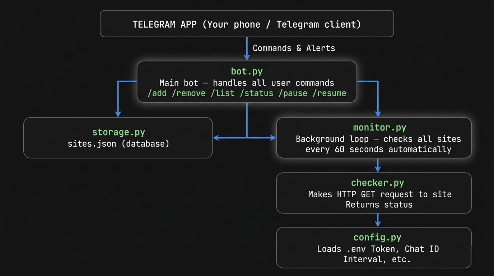
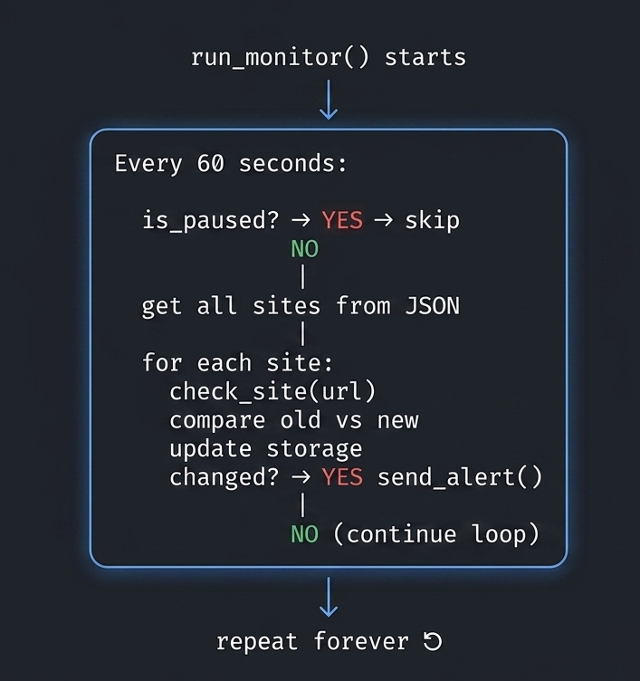

Build a Python Telegram Bot That Monitors Any Website and Alerts You Instantly
Learn How to Create a Python Telegram Bot That Monitors Any Website and Alerts You Instantly: Step-by-Step Guide for Beginners:

Imagine you run a website, an online shop, or a personal blog. What if your site goes down at 3 AM and you don't know until your customers start complaining? That's a nightmare scenario — and it's completely avoidable.
In this tutorial, you'll learn how to build a Python Telegram Bot that watches your websites 24/7 and sends you an instant Telegram alert the moment something goes wrong — whether the site is down, too slow, or missing critical content.
This is a real-world, production-ready Python project that teaches you:
- Asynchronous Python programming (
async/await). - HTTP request handling with
aiohttp. - Telegram Bot API integration.
- JSON-based data persistence.
- Background task loops.
Who Is This Tutorial For?
- Beginners who know basic Python and want a real project to build.
- Developers who want to monitor their own websites for free.
- Bug bounty hunters who need to track when target sites change.
- Freelancers who manage client websites and need uptime alerts.
- Students learning Python automation, bots, and async programming.
Table of Contents
Introduction
Never miss a downtime again. In this tutorial, you'll learn how to build a Python Telegram bot that automatically monitors any website 24/7 and sends you an instant Telegram alert the moment something changes — whether your site goes down, recovers, or loses critical content.
Whether you're a web developer protecting your live site, an ethical hacker tracking page changes for bug bounty hunting, or a Python beginner looking for a real-world automation project — this guide is built for you.
By the end, you'll have a fully working website monitoring Python script with commands like /add,
/status, and /pause —
all controlled directly from your Telegram app.
Project Architecture — How the Components Fit Together
Before diving into code, understand how the five Python files work together:

In Simple Terms:
config.py— reads your secret settingstorage.py— saves and loads site data from a JSON file.checker.py— visits each website and checks if it's alive.monitor.py— runs forever in the background, checking sites on a schedule.bot.py— the brain: handles your Telegram commands and starts everything.
Project File Structure
website-monitor-bot/
├── bot.py ← Main bot: all Telegram commands
├── monitor.py ← Background loop: checks sites automatically
├── checker.py ← HTTP engine: visits websites, checks status
├── storage.py ← Database: reads/writes sites.json
├── config.py ← Settings: loads .env variables
├── sites.json ← Auto-created: stores all your site data
├── .env ← Secret file: bot token and chat ID
└── requirements.txt ← Python packages needed
Step 1: Get Your Telegram Bot Token
Before writing any code, you need a Telegram bot token.
- Open Telegram → search for "BotFather"
- Send: /newbot
- Follow the prompts → give your bot a name
- Copy the token BotFather gives you (looks like: 123456789:ABCdef...)
- Start your bot, then visit: https://api.telegram.org/bot
/getUpdates - Send any message to your bot
- Note your "chat_id" from the JSON response
Beginner Tip: Never share your bot token publicly. Treat it like a password. Anyone with your token can control your bot.
Step 2: Install Dependencies
Bash
pip install python-telegram-bot requests beautifulsoup4 python-dotenv aiohttp
What each package does:
| Package | Purpose |
|---|---|
python-telegram-bot |
Connects your Python code to Telegram's API |
aiohttp |
Makes fast, asynchronous HTTP requests to websites |
beautifulsoup4 |
Parses HTML (used for content checking) |
python-dotenv |
Loads secret values from your .env file |
requests |
Standard HTTP library (fallback utility) |
Step 3: Create Your .env File
Create a file named .env in your project folder:
BOT_TOKEN=123456789:ABCdefGHIjklMNOpqrstUVwxyz
CHAT_ID=987654321
CHECK_INTERVAL=60
What each variable means:
BOT_TOKEN: Your Telegram bot's unique token for authentication.CHAT_ID: The ID of the chat where you want to receive notifications.CHECK_INTERVAL: How often (in seconds) the bot should check the website for changes.
Beginner Tip: Never commit your .env file to GitHub. Add it to .gitignore to keep your secrets safe.
Step 4: Settings & Defaults (config.py)
config.py
import os
from dotenv import load_dotenv
load_dotenv()
BOT_TOKEN = os.getenv("BOT_TOKEN")
CHAT_ID = os.getenv("CHAT_ID")
CHECK_INTERVAL = int(os.getenv("CHECK_INTERVAL", 60)) # default: 60 seconds
STORAGE_FILE = "sites.json"
REQUEST_TIMEOUT = 10 # max seconds to wait for a site response
MAX_SITES = 50 # maximum number of sites per bot instance
What This Does
load_dotenv()reads your .env file and makes those values available as environment variables.os.getenv("BOT_TOKEN")fetches the value of BOT_TOKEN from the environment.int(os.getenv("CHECK_INTERVAL", 60))ifCHECK_INTERVALis not set in .env, it defaults to 60.STORAGE_FILEthe name of the JSON file used as a simple database.REQUEST_TIMEOUTif a website doesn't respond within 10 seconds, it's marked as down.MAX_SITESprevents abuse by limiting to 50 monitored sites.
Centralizing all settings in one file means you only need to change one place when adjusting bot behavior. This is a professional practice called configuration management.
Step 5: JSON Database (Persistent State) [storage.py]
storage.py
import json, os
from config import STORAGE_FILE
# Default data structure when no sites.json exists yet
DEFAULT = {"sites": {}, "paused": False}
def load() -> dict:
"""Read sites.json from disk. Return default if file doesn't exist."""
if os.path.exists(STORAGE_FILE):
with open(STORAGE_FILE, "r") as f:
return json.load(f)
return dict(DEFAULT)
def save(data: dict):
"""Write updated data back to sites.json."""
with open(STORAGE_FILE, "w") as f:
json.dump(data, f, indent=2)
def get_sites() -> dict:
"""Return the dictionary of all monitored sites."""
return load().get("sites", {})
def add_site(url: str, name: str, keyword: str = None):
"""Add a new site to the watchlist."""
data = load()
data["sites"][url] = {
"name": name,
"keyword": keyword,
"status": "unknown",
"last_checked": None,
"response_time": None,
"failures": 0
}
save(data)
def remove_site(url: str) -> bool:
"""Remove a site from the watchlist. Returns True if found."""
data = load()
if url in data["sites"]:
del data["sites"][url]
save(data)
return True
return False
def update_site(url: str, **kwargs):
"""Update specific fields for a site (status, response time, etc.)."""
data = load()
if url in data["sites"]:
data["sites"][url].update(kwargs)
save(data)
def is_paused() -> bool:
"""Check if monitoring is currently paused."""
return load().get("paused", False)
def set_paused(val: bool):
"""Set the global monitoring pause state."""
data = load()
data["paused"] = val
save(data)
Code Explanation
Imports & Config
import json, os
from config import STORAGE_FILE
json— reads/writes JSON files.os— checks if the file exists on disk.STORAGE_FILE— a file path constant imported from your config (e.g., "storage.json" or "data/sites.json")
Default Data Structure
DEFAULT = {
"sites": {}, # url -> { name, keyword, status, last_seen, response_time, added_by }
"paused": False
}
This defines the skeleton of your JSON file when it doesn't exist yet:
| Key | Type | Purpose |
|---|---|---|
"sites" |
dict | All monitored websites, keyed by URL |
"paused" |
bool | Global toggle to pause all monitoring |
Each site entry (nested inside "sites") stores:
{
"https://example.com": {
"name": "Example Site",
"keyword": "Welcome",
"status": "unknown",
"last_checked": null,
"response_time": null,
"failures": 0
}
}
Core Read/Write Functions
➤ load() — Read from disk
def load() -> dict:
if os.path.exists(STORAGE_FILE):
with open(STORAGE_FILE, "r") as f:
return json.load(f)
return dict(DEFAULT)
Flow:
- Checks if the JSON file exists on disk.
- If yes → opens it and parses it into a Python
dict. - If no → returns a fresh copy of
DEFAULT.
Site Management Functions
➤ get_sites() — Fetch all monitored sites
def get_sites() -> dict:
return load().get("sites", {})
- Loads the file and returns only the
"sites"dictionary. - Falls back to
{}if"sites"key is somehow missing.
➤ add_site() — Register a new site
def add_site(url: str, name: str, keyword: str = None):
data = load()
data["sites"][url] = {
"name": name,
"keyword": keyword,
"status": "unknown",
"last_checked": None,
"response_time": None,
"failures": 0,
}
save(data)
urlis the dictionary key — acts as a unique ID for each site.keywordis optional (= None) — used to check if a specific word appears in the response body.- All monitoring fields start at neutral defaults:
status: "unknown"— not yet checkedlast_checked: None— never checkedresponse_time: None— not measured yetfailures: 0— no failures recorded
➤ remove_site() — Delete a site
def remove_site(url: str) -> bool:
data = load()
if url in data["sites"]:
del data["sites"][url]
save(data)
return True
return False
- Returns
Trueif the site was found and deleted. - Returns
Falseif the URL didn't exist — lets the caller handle the "not found" case gracefully. - Safe — won't crash if URL is missing.
➤ update_site() — Updates site fields
def update_site(url: str, **kwargs):
data = load()
if url in data["sites"]:
data["sites"][url].update(kwargs)
save(data)
**kwargsaccepts any number of keyword arguments dynamically..update(kwargs)merges them into the existing site dict — only updating the fields you pass.- Used by the monitoring engine to write results back, e.g.:
# Called after checking a site
update_site(
"https://example.com",
status="up",
last_checked="2026-04-08T12:00:00",
response_time=0.342,
failures=0
)
Pause Control Functions
➤ is_paused() — Check if
monitoring is
paused
def is_paused() -> bool:
return load().get("paused", False)
- Returns
TrueorFalse. - The monitoring loop checks this before each check cycle — if
True, it skips all checks.
➤ set_paused() — Pause or resume monitoring
def set_paused(val: bool):
data = load()
data["paused"] = val
save(data)
Usage:
set_paused(True) # Pause all monitoring
set_paused(False) # Resume monitoring
Step 6: HTTP Check Engine [checker.py]
import aiohttp
import asyncio
from datetime import datetime
async def check_site(url: str, keyword: str = None, timeout: int = 10) -> dict:
"""
Returns a result dict:
status : "up" | "down" | "keyword_missing"
status_code: int or None
response_ms: int (milliseconds)
error : str or None
keyword_found: bool or None
"""
result = {
"status": "down",
"status_code": None,
"response_ms": None,
"error": None,
"keyword_found": None,
"checked_at": datetime.now().strftime("%Y-%m-%d %H:%M:%S"),
}
headers = {
"User-Agent": (
"Mozilla/5.0 (Windows NT 10.0; Win64; x64) "
"AppleWebKit/537.36 Chrome/122.0 Safari/537.36"
)
}
try:
start = asyncio.get_event_loop().time()
async with aiohttp.ClientSession() as session:
async with session.get(url, headers=headers,
timeout=aiohttp.ClientTimeout(total=timeout),
allow_redirects=True, ssl=False) as resp:
elapsed_ms = int((asyncio.get_event_loop().time() - start) * 1000)
result["status_code"] = resp.status
result["response_ms"] = elapsed_ms
if resp.status == 200:
if keyword:
body = await resp.text()
if keyword.lower() in body.lower():
result["status"] = "up"
result["keyword_found"] = True
else:
result["status"] = "keyword_missing"
result["keyword_found"] = False
else:
result["status"] = "up"
else:
result["status"] = "down"
result["error"] = f"HTTP {resp.status}"
except aiohttp.ClientConnectorError:
result["error"] = "Connection refused / DNS failure"
except asyncio.TimeoutError:
result["error"] = f"Timeout after {timeout}s"
except Exception as e:
result["error"] = str(e)
return result
Code Breakdown
Imports
import aiohttp # Async HTTP client (non-blocking requests)
import asyncio # Python's async event loop framework
from datetime import datetime # For timestamping the check
aiohttp— likerequestsbut async; can check hundreds of sites simultaneously without waiting for each one.asyncio— manages the event loop that runs async tasks concurrently.
Function Signature
async def check_site(url: str, keyword: str = None, timeout: int = 10) -> dict:
| Parameter | Type | Purpose |
|---|---|---|
url |
str | The website URL to check |
keyword |
str (optional) | A word to search in the page body |
timeout |
int | Max seconds to wait (default: 10) |
async def — marks this as a coroutine; must be await-ed when called.
Result Dictionary (Default State)
result = {
"status": "down", # Assume down until proven otherwise
"status_code": None, # HTTP status code (200, 404, 500...)
"response_ms": None, # Response time in milliseconds
"error": None, # Error message if something fails
"keyword_found": None, # True/False if keyword was searched
"checked_at": datetime.now().strftime("%Y-%m-%d %H:%M:%S"),
}
This is initialized as pessimistic — everything starts as "down" and
gets updated only if the
request succeeds.
Fake Browser Headers
headers = {
"User-Agent": (
"Mozilla/5.0 (Windows NT 10.0; Win64; x64) "
"AppleWebKit/537.36 Chrome/122.0 Safari/537.36"
)
}
Disguises the HTTP request as a real Chrome browser on Windows. Without this, many sites block bots or return different responses.
The Core Request (Step by Step)
start = asyncio.get_event_loop().time()
Records the start time using the event loop's high-precision clock (more accurate than
time.time() for async code).
async with aiohttp.ClientSession() as session:
Opens an HTTP session — like a browser session. The async with ensures
it's properly closed
afterward even if an error
occurs.
async with session.get(
url,
headers=headers,
timeout=aiohttp.ClientTimeout(total=timeout),
allow_redirects=True,
ssl=False
) as resp:
| Argument / Parameter | Type | Purpose |
|---|---|---|
url |
str | Target website URL |
headers |
dict | Sends fake browser identity (User-Agent) |
timeout |
int | Kills request after N seconds (Default: 10) |
allow_redirects=True |
bool | Follows HTTP 301/302 redirects automatically |
ssl=False |
bool | Skips SSL verification (useful for self-signed or broken HTTPS) |
Measuring Response Time
elapsed_ms = int((asyncio.get_event_loop().time() - start) * 1000)
result["status_code"] = resp.status
result["response_ms"] = elapsed_ms
Status Logic (The Decision Tree)
HTTP 200 received?
├── YES → keyword provided?
│ ├── YES → keyword in body?
│ │ ├── YES → status = "up", keyword_found = True
│ │ └── NO → status = "keyword_missing", keyword_found = False
│ └── NO → status = "up"
└── NO → status = "down", error = "HTTP {code}"
if resp.status == 200:
if keyword:
body = await resp.text() # Read full HTML body
if keyword.lower() in body.lower(): # Case-insensitive search
result["status"] = "up"
result["keyword_found"] = True
else:
result["status"] = "keyword_missing"
result["keyword_found"] = False
else:
result["status"] = "up"
else:
result["status"] = "down"
result["error"] = f"HTTP {resp.status}"
The 3 possible outcomes:
| Status | Meaning |
|---|---|
"up" |
Site responded 200, keyword found (or not required) |
"keyword_missing" |
Site is online but expected content not found |
"down" |
Non-200 response (404, 500, etc.) |
Error Handling
except aiohttp.ClientConnectorError:
result["error"] = "Connection refused / DNS failure"
Site doesn't exist, server is down, or DNS can't resolve the domain.
except asyncio.TimeoutError:
result["error"] = f"Timeout after {timeout}s"
Server took too long to respond — likely overloaded or dead.
except Exception as e:
result["error"] = str(e)
Catches any other unexpected error (SSL errors if ssl=True, malformed URL, etc.).
Step 7: The Background Loop [monitor.py]
This is the brain of the monitoring system. It runs silently in the background, checks every website on your list at regular intervals, and fires a Telegram alert instantly when a site's status changes.
import asyncio
from datetime import datetime
from checker import check_site
from storage import get_sites, update_site, is_paused
from config import CHECK_INTERVAL, CHAT_ID
def status_emoji(status: str) -> str:
return {"up": "✅", "down": "🔴", "keyword_missing": "⚠️", "unknown": "❓"}.get(status, "❓")
async def run_monitor(app):
"""Runs forever in the background — checks all sites on interval."""
print(f"🔍 Monitor started — checking every {CHECK_INTERVAL}s")
while True:
if not is_paused():
sites = get_sites()
for url, info in sites.items():
prev_status = info.get("status", "unknown")
result = await check_site(url, info.get("keyword"))
new_status = result["status"]
update_site(url,
status=new_status,
last_checked=result["checked_at"],
response_time=result["response_ms"],
failures=info.get("failures", 0) + (1 if new_status != "up" else 0)
)
# Only alert on STATUS CHANGE (no spam)
if new_status != prev_status:
await send_alert(app, url, info["name"], prev_status,
new_status, result)
await asyncio.sleep(CHECK_INTERVAL)
async def send_alert(app, url: str, name: str, prev: str, curr: str, result: dict):
"""Fire an instant Telegram alert on status change."""
emoji = status_emoji(curr)
prev_emoji = status_emoji(prev)
if curr == "up":
header = f"*SITE RECOVERED*"
color_word = "is back ONLINE"
elif curr == "down":
header = f"*SITE DOWN ALERT*"
color_word = "went OFFLINE"
else:
header = f"*CONTENT CHANGED*"
color_word = "is missing expected content"
msg = (
f"{header}\n"
f"{'─'*30}\n"
f"*Site:* {name}\n"
f"*URL:* `{url}`\n"
f"*Status:* {prev_emoji} → {emoji} _{color_word}_\n"
f"*Response:* {result['response_ms']} ms\n"
f"*Time:* {result['checked_at']}\n"
)
if result.get("error"):
msg += f"*Error:* `{result['error']}`\n"
if curr != "up":
msg += f"\nRechecking every {CHECK_INTERVAL}s until recovery..."
await app.bot.send_message(
chat_id=CHAT_ID,
text=msg,
parse_mode="Markdown",
disable_web_page_preview=True
)
print(f" Alert sent: {name} → {curr}")
Code Breakdown
Imports
import asyncio
from datetime import datetime
from checker import check_site
from storage import get_sites, update_site, is_paused
from config import CHECK_INTERVAL, CHAT_ID
| Import / Function / Constant | Purpose |
|---|---|
asyncio |
Runs multiple tasks concurrently without blocking |
datetime |
Handles timestamps for last-checked time |
check_site |
Sends HTTP request and returns site status |
get_sites |
Loads all monitored URLs from sites.json |
update_site |
Saves updated status back to sites.json |
is_paused |
Checks if monitoring is paused by user |
CHECK_INTERVAL |
How often to check (e.g., every 60 seconds) |
CHAT_ID |
Your Telegram user ID to send alerts to |
Function 1 — status_emoji()
def status_emoji(status: str) -> str:
return {"up": "✅", "down": "🔴", "keyword_missing": "⚠️", "unknown": "❓"}.get(status, "❓")
What it does: Converts a plain text status into a visual emoji for Telegram messages.
How it works:
| Status Text | Returns |
|---|---|
"up" |
✅ |
"down" |
🔴 |
"keyword_missing" |
⚠️ |
"unknown" |
❓ |
| Anything else | ❓ |
Function 2 — run_monitor() — The Main Loop
async def run_monitor(app):
print(f"🔍 Monitor started — checking every {CHECK_INTERVAL}s")
while True:
if not is_paused():
sites = get_sites()
for url, info in sites.items():
...
await asyncio.sleep(CHECK_INTERVAL)
What it does: Runs an infinite loop that never stops. Every {CHECK_INTERVAL} seconds, it wakes up and checks all your monitored
sites —
unless monitoring is paused.
Bot starts
│
▼
while True (runs forever)
│
├── is_paused? ──► YES → skip, sleep, repeat
│
└── NO → get all sites → check each one → update → alert if changed
│
▼
sleep(CHECK_INTERVAL)
│
▼
repeat forever ↺
Inside the Loop — Checking Each Site
for url, info in sites.items():
prev_status = info.get("status", "unknown")
result = await check_site(url, info.get("keyword"))
new_status = result["status"]
What it does:
prev_status→ Remembers the old status before checking (e.g.,"up").await check_site(...)→ Actually visits the URL and gets back the result.new_status→ The fresh status just returned (e.g.,"down").
await means: wait for the HTTP check to finish before moving on —
but don't block other tasks
while waiting.
Updating the Site Data
update_site(url,
status=new_status,
last_checked=result["checked_at"],
response_time=result["response_ms"],
failures=info.get("failures", 0) + (1 if new_status != "up" else 0)
)
What it does: Saves the latest check results back to sites.json.
| Field | What Gets Saved |
|---|---|
status |
Latest status: "up", "down", etc. |
last_checked |
Timestamp of this check |
response_time |
How fast the site responded (ms) |
failures |
Increments by 1 if site is NOT up |
Failure counter logic:
failures + (1 if new_status != "up" else 0)
→ If up: keep the same count
→ If down/missing: add 1 to the failure count
The Smart Alert Trigger
if new_status != prev_status:
await send_alert(app, url, info["name"], prev_status, new_status, result)
What is does: Only sends an alert when the status actually changed.
Why this is smart: Without this check, you'd get a Telegram message every 60 seconds saying "site is up" — which is annoying spam. This way you only get notified when something actually happens.
| Scenario | Alert Sent? |
|---|---|
| Was up → Still up | ❌ No |
| Was up → Now down | ✅ Yes |
| Was down → Now up | ✅ Yes |
| Was up → Keyword missing | ✅ Yes |
Function 3 — send_alert() — The Telegram Notification
async def send_alert(app, url, name, prev, curr, result):
What is does: Builds a nicely formatted Telegram message and sends it to your chat when a status change is detected.
Step 1 — Decide the Header and Message
if curr == "up":
header = f"*SITE RECOVERED*"
color_word = "is back ONLINE"
elif curr == "down":
header = f"*SITE DOWN ALERT*"
color_word = "went OFFLINE"
else:
header = f"*CONTENT CHANGED*"
color_word = "is missing expected content"
Three possible alert types:
| Current Status | Alert Type |
|---|---|
"up" |
Site Recovered |
"down" |
Site Down Alert |
"keyword_missing" |
Content Changed |
Step 2 — Build the Message
msg = (
f"{header}\n"
f"{'─'*30}\n"
f"*Site:* {name}\n"
f"*URL:* `{url}`\n"
f"*Status:* {prev_emoji} → {emoji} _{color_word}_\n"
f"*Response:* {result['response_ms']} ms\n"
f"*Time:* {result['checked_at']}\n"
)
Step 3 — Add Error Info (If Any)
if result.get("error"):
msg += f"*Error:* `{result['error']}`\n"
Only adds the error line if the check returned an error (e.g., "Connection timeout"). If the site is just slow or missing keyword, there may be no error.
Step 4 — Add Recheck Reminder (If Down)
if curr != "up":
msg += f"\nRechecking every {CHECK_INTERVAL}s until recovery..."
Adds a helpful footer so you know the bot is still watching and will alert you again when it recovers.
Step 5 — Send the Message
await app.bot.send_message(
chat_id=CHAT_ID,
text=msg,
parse_mode="Markdown",
disable_web_page_preview=True
)
print(f" Alert sent: {name} → {curr}")
| Parameter | Purpose |
|---|---|
chat_id=CHAT_ID |
Sends to YOUR Telegram account only |
text=msg |
The formatted message built above |
parse_mode="Markdown" |
Enables bold, italic, code formatting |
disable_web_page_preview=True |
Stops Telegram from generating a URL preview card |

Step 8: Main Bot + All Commands [bot.py]
import asyncio
import logging
from telegram import Update, BotCommand
from telegram.ext import (
Application, CommandHandler, ContextTypes
)
from config import BOT_TOKEN, CHECK_INTERVAL
from storage import (add_site, remove_site, get_sites,
update_site, is_paused, set_paused)
from checker import check_site
from monitor import run_monitor, status_emoji
logging.basicConfig(
format="%(asctime)s [%(levelname)s] %(message)s",
level=logging.INFO
)
# ─── /start ──────────────────────────────────────────────────
async def cmd_start(update: Update, ctx: ContextTypes.DEFAULT_TYPE):
await update.message.reply_text(
" *Website Monitor Bot*\n"
"━━━━━━━━━━━━━━━━━━━━━━━\n"
"I'll watch your websites and alert you the *instant* anything changes.\n\n"
" *Commands:*\n"
"`/add [keyword]` — Add a site\n"
"`/remove ` — Remove a site\n"
"`/list` — Show all monitored sites\n"
"`/status ` — Check a site right now\n"
"`/statusall` — Check all sites immediately\n"
"`/pause` — Pause monitoring\n"
"`/resume` — Resume monitoring\n"
"`/help` — Show this menu",
parse_mode="Markdown"
)
# ─── /add ────────────────────────────────────────────────────
async def cmd_add(update: Update, ctx: ContextTypes.DEFAULT_TYPE):
args = ctx.args
if len(args) < 2:
await update.message.reply_text(
" Usage: `/add [keyword]`\n\n"
"Example:\n"
"`/add https://devspirehub.com DevspireHub`\n"
"`/add https://mysite.com MyShop \"Add to Cart\"`",
parse_mode="Markdown"
)
return
url = args[0]
if not url.startswith("http"):
url = "https://" + url
name = args[1]
keyword = " ".join(args[2:]) if len(args) > 2 else None
if len(get_sites()) >= 50:
await update.message.reply_text(" Max 50 sites reached. Remove one first.")
return
add_site(url, name, keyword)
msg = (
f" *Site added to watchlist!*\n"
f" *Name:* {name}\n"
f" *URL:* `{url}`\n"
)
if keyword:
msg += f" *Monitoring keyword:* `{keyword}`\n"
msg += f"⏱ *Check interval:* every {CHECK_INTERVAL}s"
await update.message.reply_text(msg, parse_mode="Markdown")
# ─── /remove ─────────────────────────────────────────────────
async def cmd_remove(update: Update, ctx: ContextTypes.DEFAULT_TYPE):
if not ctx.args:
await update.message.reply_text("Usage: `/remove `", parse_mode="Markdown")
return
url = ctx.args[^0]
if remove_site(url):
await update.message.reply_text(f" Removed: `{url}`", parse_mode="Markdown")
else:
await update.message.reply_text(" URL not found in watchlist.")
# ─── /list ───────────────────────────────────────────────────
async def cmd_list(update: Update, ctx: ContextTypes.DEFAULT_TYPE):
sites = get_sites()
if not sites:
await update.message.reply_text(" No sites monitored yet. Use /add to start.")
return
paused_tag = " ⏸ *PAUSED*" if is_paused() else ""
msg = f" *Monitored Sites*{paused_tag}\n{'━'*30}\n"
for url, info in sites.items():
emoji = status_emoji(info.get("status", "unknown"))
rt = f"{info['response_time']}ms" if info.get("response_time") else "N/A"
kw = f" | `{info['keyword']}`" if info.get("keyword") else ""
msg += (
f"{emoji} *{info['name']}*{kw}\n"
f" └ `{url}`\n"
f" └ {rt} | {info.get('last_checked') or 'Never'}\n\n"
)
await update.message.reply_text(msg, parse_mode="Markdown",
disable_web_page_preview=True)
# ─── /status ─────────────────────────────────────────────────
async def cmd_status(update: Update, ctx: ContextTypes.DEFAULT_TYPE):
if not ctx.args:
await update.message.reply_text("Usage: `/status `", parse_mode="Markdown")
return
url = ctx.args[^0]
sites = get_sites()
keyword = sites.get(url, {}).get("keyword")
await update.message.reply_text(f" Checking `{url}`...", parse_mode="Markdown")
result = await check_site(url, keyword)
emoji = status_emoji(result["status"])
msg = (
f"{emoji} *Live Check Result*\n"
f"{'─'*28}\n"
f"`{url}`\n"
f" Status: *{result['status'].upper()}*\n"
f" HTTP Code: `{result['status_code'] or 'N/A'}`\n"
f" Response: `{result['response_ms']} ms`\n"
f" Checked: {result['checked_at']}\n"
)
if result.get("error"):
msg += f"Error: `{result['error']}`\n"
if result.get("keyword") and result.get("keyword_found") is not None:
found = "Found" if result["keyword_found"] else "Not Found"
msg += f"Keyword: {found}\n"
await update.message.reply_text(msg, parse_mode="Markdown",
disable_web_page_preview=True)
# ─── /statusall ──────────────────────────────────────────────
async def cmd_statusall(update: Update, ctx: ContextTypes.DEFAULT_TYPE):
sites = get_sites()
if not sites:
await update.message.reply_text("No sites to check.")
return
await update.message.reply_text(f"Checking {len(sites)} site(s)...")
msg = "*Live Status — All Sites*\n" + "━" * 30 + "\n"
for url, info in sites.items():
result = await check_site(url, info.get("keyword"))
emoji = status_emoji(result["status"])
update_site(url, status=result["status"],
response_time=result["response_ms"],
last_checked=result["checked_at"])
rt = f"{result['response_ms']}ms" if result["response_ms"] else "N/A"
msg += f"{emoji} *{info['name']}* — `{rt}`\n `{url}`\n\n"
await update.message.reply_text(msg, parse_mode="Markdown",
disable_web_page_preview=True)
# ─── /pause & /resume ────────────────────────────────────────
async def cmd_pause(update: Update, ctx: ContextTypes.DEFAULT_TYPE):
set_paused(True)
await update.message.reply_text("⏸ Monitoring *paused*. Use /resume to restart.",
parse_mode="Markdown")
async def cmd_resume(update: Update, ctx: ContextTypes.DEFAULT_TYPE):
set_paused(False)
await update.message.reply_text("▶Monitoring *resumed*!", parse_mode="Markdown")
# ─── Boot ────────────────────────────────────────────────────
async def post_init(app: Application):
await app.bot.set_my_commands([
BotCommand("start", "Show welcome & help"),
BotCommand("add", "Add a site to monitor"),
BotCommand("remove", "Remove a site"),
BotCommand("list", "List all monitored sites"),
BotCommand("status", "Live check one site"),
BotCommand("statusall", "Live check all sites"),
BotCommand("pause", "Pause monitoring"),
BotCommand("resume", "Resume monitoring"),
])
asyncio.create_task(run_monitor(app))
print("Bot is live and monitoring!")
def main():
app = (
Application.builder()
.token(BOT_TOKEN)
.post_init(post_init)
.build()
)
app.add_handler(CommandHandler("start", cmd_start))
app.add_handler(CommandHandler("help", cmd_start))
app.add_handler(CommandHandler("add", cmd_add))
app.add_handler(CommandHandler("remove", cmd_remove))
app.add_handler(CommandHandler("list", cmd_list))
app.add_handler(CommandHandler("status", cmd_status))
app.add_handler(CommandHandler("statusall", cmd_statusall))
app.add_handler(CommandHandler("pause", cmd_pause))
app.add_handler(CommandHandler("resume", cmd_resume))
print("Starting Website Monitor Bot...")
app.run_polling(drop_pending_updates=True)
if __name__ == "__main__":
main()
Code Breakdown
Imports
import asyncio
import logging
from telegram import Update, BotCommand
from telegram.ext import Application, CommandHandler, ContextTypes
from config import BOT_TOKEN, CHECK_INTERVAL
from storage import (add_site, remove_site, get_sites,
update_site, is_paused, set_paused)
from checker import check_site
from monitor import run_monitor, status_emoji
| Import / Function / Constant | What It Does |
|---|---|
asyncio |
Runs async tasks (background monitor loop) |
logging |
Prints log messages with timestamps |
Update |
Represents an incoming Telegram message/command |
BotCommand |
Defines slash commands shown in Telegram menu |
Application |
The main bot app object from python-telegram-bot |
CommandHandler |
Links a /command to a Python function |
BOT_TOKEN |
Your secret bot token from .env |
CHECK_INTERVAL |
How often (seconds) to check sites |
storage functions |
Load, save, update site data |
check_site |
Performs the actual HTTP request |
run_monitor |
The background loop that checks sites |
status_emoji |
Returns ✅🔴⚠️ based on site status |
Logging Setup
logging.basicConfig(
format="%(asctime)s [%(levelname)s] %(message)s",
level=logging.INFO
)
What it does: Configures Python's built-in logger to print timestamped messages in your terminal.
2026-04-11 10:00:01 [INFO] Bot started polling...
2026-04-11 10:01:00 [INFO] Checking https://mysite.com
Why it's used: Helps you debug and monitor the bot's activity in real time without adding print() everywhere.
/start Command
async def cmd_start(update: Update, ctx: ContextTypes.DEFAULT_TYPE):
await update.message.reply_text(
" *Website Monitor Bot*\n..."
parse_mode="Markdown"
)
What it does: Sends a welcome message with the full list of available commands
when the user sends /start or /help.
/add Command
async def cmd_add(update: Update, ctx: ContextTypes.DEFAULT_TYPE):
args = ctx.args
if len(args) < 2:
await update.message.reply_text(" Usage: ...")
return
url = args[0]
if not url.startswith("http"):
url = "https://" + url
name = args[1]
keyword = " ".join(args[2:]) if len(args) > 2 else None
if len(get_sites()) >= 50:
await update.message.reply_text(" Max 50 sites reached.")
return
add_site(url, name, keyword)
await update.message.reply_text(msg, parse_mode="Markdown")
What it does: Adds a new website to the monitoring watchlist.
User sends: /add https://mysite.com MySite "Add to Cart"
↓ ↓ ↓
args[0] args[1] args[2:]
url name keyword
| Step | What Happens |
|---|---|
Check len(args) < 2 |
Show usage hint if URL or name is missing |
Check if not url.startswith("http") |
Auto-adds https:// if user forgot it |
" ".join(args[2:]) |
Joins multi-word keywords like "Add to Cart" |
len(get_sites()) >= 50 |
Hard limit of 50 sites to prevent abuse |
add_site(url, name, keyword) |
Saves the site to sites.json |
/remove Command
async def cmd_remove(update: Update, ctx: ContextTypes.DEFAULT_TYPE):
if not ctx.args:
await update.message.reply_text("Usage: `/remove `")
return
url = ctx.args[0]
if remove_site(url):
await update.message.reply_text(f" Removed: `{url}`")
else:
await update.message.reply_text(" URL not found in watchlist.")
What it does: Removes a website from the watchlist by its URL.
remove_site(url)returns True if found and deleted, False if not found.- The bot replies with a different message depending on whether deletion succeeded.
/list Command
async def cmd_list(update: Update, ctx: ContextTypes.DEFAULT_TYPE):
sites = get_sites()
if not sites:
await update.message.reply_text(" No sites monitored yet.")
return
paused_tag = " ⏸ *PAUSED*" if is_paused() else ""
msg = f" *Monitored Sites*{paused_tag}\n{'━'*30}\n"
for url, info in sites.items():
emoji = status_emoji(info.get("status", "unknown"))
rt = f"{info['response_time']}ms" if info.get("response_time") else "N/A"
kw = f" | `{info['keyword']}`" if info.get("keyword") else ""
msg += f"{emoji} *{info['name']}*{kw}\n└ `{url}`\n└ ⏱ {rt}\n\n"
await update.message.reply_text(msg, parse_mode="Markdown",
disable_web_page_preview=True)
What it does: Shows all monitored websites in a formatted list with their status, response time, and last checked time.
Sample output in Telegram:
Monitored Sites ⏸ PAUSED
━━━━━━━━━━━━━━━━━━━━━━━━━━━━━━
DevspireHub | `login`
└ https://devspirehub.com
└ 320ms | 2026-04-11 09:55:00
MyShop
└ https://myshop.com
└ N/A | Never
why disable_web_page_preview=True? Prevents Telegram from generating
link
previews for
every URL in the list, which would clutter the message.
/status Command
async def cmd_status(update: Update, ctx: ContextTypes.DEFAULT_TYPE):
url = ctx.args[0]
keyword = sites.get(url, {}).get("keyword")
await update.message.reply_text(f" Checking `{url}`...")
result = await check_site(url, keyword)
# Build and send result message
await update.message.reply_text(msg, parse_mode="Markdown")
What it does: Instantly checks a single site right now (outside the regular interval) and reports the live result.
Flow:
/status https://mysite.com
↓
Send " Checking..." message
↓
await check_site() → HTTP request
↓
Reply with live result:
Status: UP
HTTP Code: 200
Response: 245ms
Keyword: Found
why " Checking..." first? Because check_site() takes time (network request). The immediate reply lets the
user know the bot received the command
and is working on it — prevents them thinking the bot is frozen.
/statusall Command
async def cmd_statusall(update: Update, ctx: ContextTypes.DEFAULT_TYPE):
sites = get_sites()
await update.message.reply_text(f" Checking {len(sites)} site(s)...")
for url, info in sites.items():
result = await check_site(url, info.get("keyword"))
update_site(url, status=result["status"], ...)
msg += f"{emoji} *{info['name']}* — `{rt}`\n`{url}`\n\n"
await update.message.reply_text(msg, parse_mode="Markdown")
What it does: Checks ALL monitored sites immediately and sends one combined status report.
Bonus Bebavior: It also calls update_site() to save
the fresh status back to
sites.json — so /list will show updated data
after
/statusall runs.
/pause and /resume Commands
async def cmd_pause(update: Update, ctx: ContextTypes.DEFAULT_TYPE):
set_paused(True)
await update.message.reply_text("⏸ Monitoring *paused*.")
async def cmd_resume(update: Update, ctx: ContextTypes.DEFAULT_TYPE):
set_paused(False)
await update.message.reply_text("▶ Monitoring *resumed*!")
What they do:
/pause→ Sets "paused": true in sites.json → monitor.py skips all checks./resume→ Sets "paused": false → monitoring continues normally
These are the simplest functions — just one storage call and one reply each.
post_init() Boot Hook
async def post_init(app: Application):
await app.bot.set_my_commands([
BotCommand("start", "Show welcome & help"),
BotCommand("add", "Add a site to monitor"),
# ... more commands
])
asyncio.create_task(run_monitor(app))
print(" Bot is live and monitoring!")
What it does: Runs automatically right after the bot connects to Telegram — before it starts listening for messages.
It does two critical things:
| Task | What It Does |
|---|---|
set_my_commands([...]) |
Registers all slash commands in Telegram's UI menu (the / popup) |
asyncio.create_task(run_monitor(app)) |
Launches the background monitoring loop as a parallel async task |
Why asyncio.create_task()? It runs run_monitor() in the background
without blocking the bot. The bot can still respond to commands while
monitoring runs simultaneously.
post_init() fires on startup
├──► set_my_commands() → Registers /add, /list etc. in Telegram UI
└──► create_task() → Launches background monitor loop
↓
Runs forever every 60s
(while bot handles commands in parallel)
main() — The Entry Point
def main():
app = (
Application.builder()
.token(BOT_TOKEN)
.post_init(post_init)
.build()
)
app.add_handler(CommandHandler("start", cmd_start))
app.add_handler(CommandHandler("help", cmd_start))
app.add_handler(CommandHandler("add", cmd_add))
app.add_handler(CommandHandler("remove", cmd_remove))
app.add_handler(CommandHandler("list", cmd_list))
app.add_handler(CommandHandler("status", cmd_status))
app.add_handler(CommandHandler("statusall", cmd_statusall))
app.add_handler(CommandHandler("pause", cmd_pause))
app.add_handler(CommandHandler("resume", cmd_resume))
app.run_polling(drop_pending_updates=True)
if __name__ == "__main__":
main()
What it does: Builds the bot, registers all command handlers, and starts it.
Line by line:
Application.builder().token(BOT_TOKEN).post_init(post_init).build()
Application.builder()→ Creates a bot builder object..token(BOT_TOKEN)→ Authenticates with Telegram using your secret token..post_init(post_init)→ Registers the boot hook to run after connection..build()→ Finalizes and returns the bot app/
app.add_handler(CommandHandler("add", cmd_add))
- Tells the bot: "When someone sends
/add, call thecmd_add()function". - Note: Both
"start"and"help"are mapped to the same cmd_start function.
app.run_polling(drop_pending_updates=True)
- Starts the bot and continuously polls Telegram for new messages.
drop_pending_updates=True→ Ignores any commands sent while the bot was offline (prevents old command flooding on restart).
if __name__ == "__main__":
main()
Ensures main() only runs when you directly execute python bot.py, not
when imported as a module.
Full Flow — How It All Works Together
python bot.py
↓
main() runs
↓
Application built with BOT_TOKEN
↓
post_init() fires:
├── Registers /commands in Telegram UI
└── Starts run_monitor() as background task
↓
Bot starts polling Telegram
│
┌─────────┴──────────┐
│ │
User sends /add Background loop
↓ ↓
cmd_add() Every 60s:
↓ check_site()
add_site() saves ↓
to sites.json Status changed?
↓
send_alert() → Telegram message to you 📱)
Running the Bot
# Run locally
python bot.py
# Run on VPS in background (persistent)
nohup python bot.py > bot.log 2>&1 &
# Or with screen
screen -S monitor
python bot.py
# Ctrl+A, D to detach
Quick Reference — All Commands
| Command | Function | What It Does |
|---|---|---|
/start or /help |
cmd_start |
Shows welcome + all commands |
/add <url> <name> |
cmd_add |
Adds site to watchlist |
/remove <url> |
cmd_remove |
Removes site from watchlist |
/list |
cmd_list |
Shows all sites + status |
/status <url> |
cmd_status |
Live checks one site now |
/statusall |
cmd_statusall |
Live checks all sites now |
/pause |
cmd_pause |
Pauses background monitoring |
/resume |
cmd_resume |
Resumes background monitoring |
Project Conclusion
Congratulations! You've just built a fully functional Python Telegram bot that monitors any website 24/7, detects downtime, tracks keyword changes, and delivers instant Telegram alerts — all from a single lightweight Python script.
This project is more than just a beginner exercise. It's a real-world automation tool you can deploy on a VPS today and use to protect your live websites, monitor competitors, or supercharge your bug bounty workflow.
Take It Further — What to Build Next
This bot is a strong foundation. Here are some powerful ways to extend it:
| Next Step | What to Add |
|---|---|
| 📧 Email Alerts | Add smtplib for dual Telegram + Email notifications |
| 📊 Response Time Chart | Use matplotlib to visualize uptime history |
| 🔐 SSL Expiry Checker | Alert when an SSL certificate is about to expire |
| ☁️ Cloudflare Integration | Monitor your Cloudflare Pages deployments by checking for your latest Git commit hash in the HTML |
| 👥 Multi-User Support | Let a team manage their own separate watchlists |
| 📦 Docker Deployment | Containerize the bot for easy cloud deployment |
Why This Project Matters
Whether you're a web developer guarding your production site, a bug bounty hunter tracking target page changes, or a Python beginner building your first automation tool — this Python Telegram bot project delivers practical, real-world skills that directly apply to modern development, DevOps, and cybersecurity.
Found this tutorial helpful? Share it with your developer community and follow along for more real-world Python automation, website monitoring, and ethical hacking projects.
Other Projects

Shooter Game
This is a beginner-friendly guide for building a Space Shooter game with Python and Pygame, covering coding concepts and project structure.
View Project →
ATM Management System
This Python application implements a multi-user ATM system with SQLite-backed persistence, featuring account management, financial transactions, and administrative controls.
View Project →
Weather App
Responsive weather app with real-time API data, feature comparison, and intuitive design for global city forecasts.
View Project →
Team Card App
Interactive team card application for cricket, featuring dynamic team selection, player filters, and customizable light/dark themes.
View Project →
Password Strength Checker
Multi-Password Batch Strength Checker (C++), designed to check multiple passwords at once, show individual strength, and provide a summary report.
View Project →
VPN Connectivity verification in C
Efficient C program to verify VPN status, routing, and DNS configurations through comprehensive public IP and network adapter analysis.
View Project →